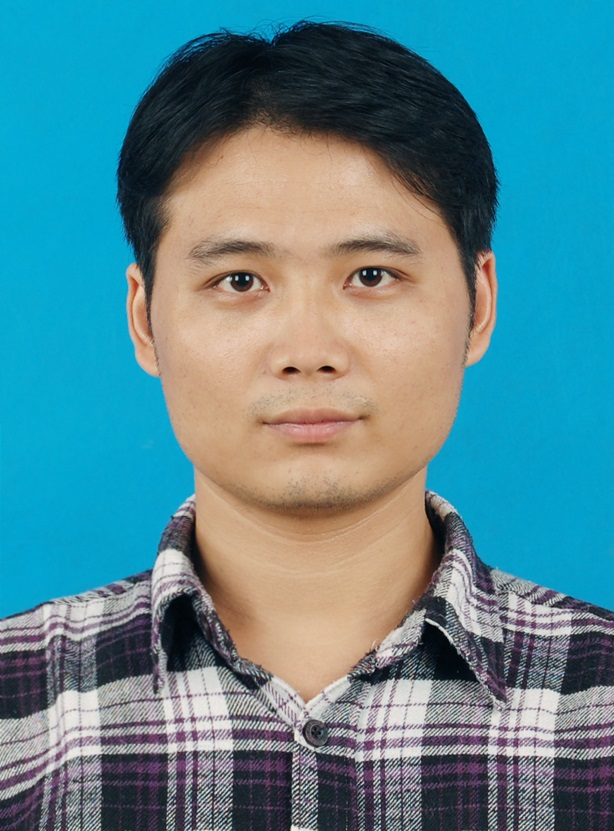

I am currently a Professor with the Department of Computer Science, Jiangsu University, Zhenjiang, Jiangsu, China. I received the Ph.D. degree from University of Science and Technology of China in 2012, supervised by Prof. Lihua Yue. I received the joint Ph.D. degree from City University of Hong Kong in 2012, supervised by Dr. Howard Leung. I worked as a Post-doc in Jiangsu University with Prof. Yongzhao Zhan. I work closely with Dr. Lanling Zeng.
Research Interests: Image Processing; Computational Imaging; Computer Graphics; Deep Learning.